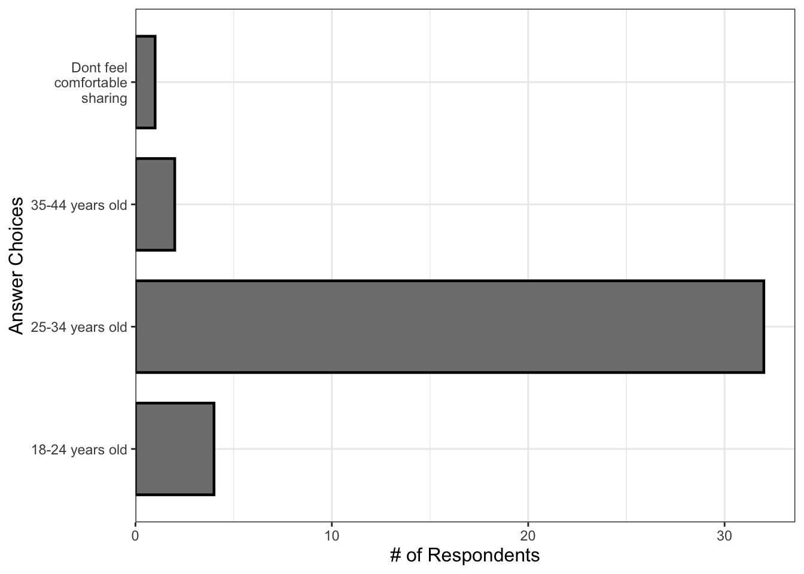
2025 GABS Graduate Experience Survey
In November of 2024, GABS aimed to gauge the Biology graduate student experience through an anonymous survey.
The survey assessed (1) Financial Support & Well-being, (2) Event Satisfaction (3) Perception of Departmental, PI, or Teaching Support, (4) General Feeling of Safety (Emotional/Physical), through a combination of multiple-choice and open-ended questions.
The survey was disseminated to 77 graduate students and we received 39 complete responses for a response rate of just over 50%.
Demographics of Respondents
82% (32/39) of respondents were 25-34 years old.
92% (36/39) of respondents are completing their PhD and 8% are completing their Masters. Of the 39 respondents, 46% (18/39) are in the MCDB program and 54% (21/39) are in the EEB program.
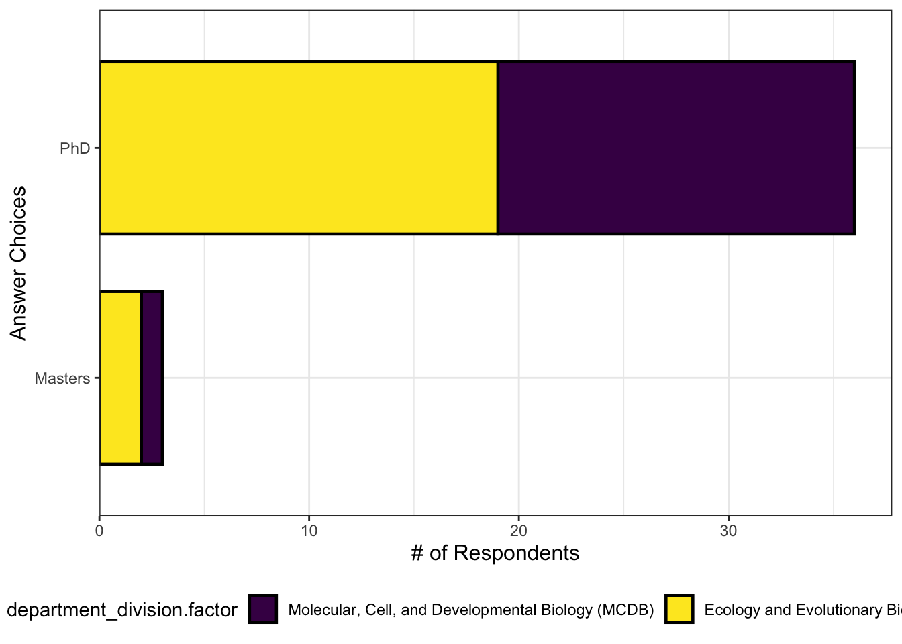
The largest cohort represented in the survey was the 2022 cohort (2nd years) who made up ~23% (9/39) of respondents.
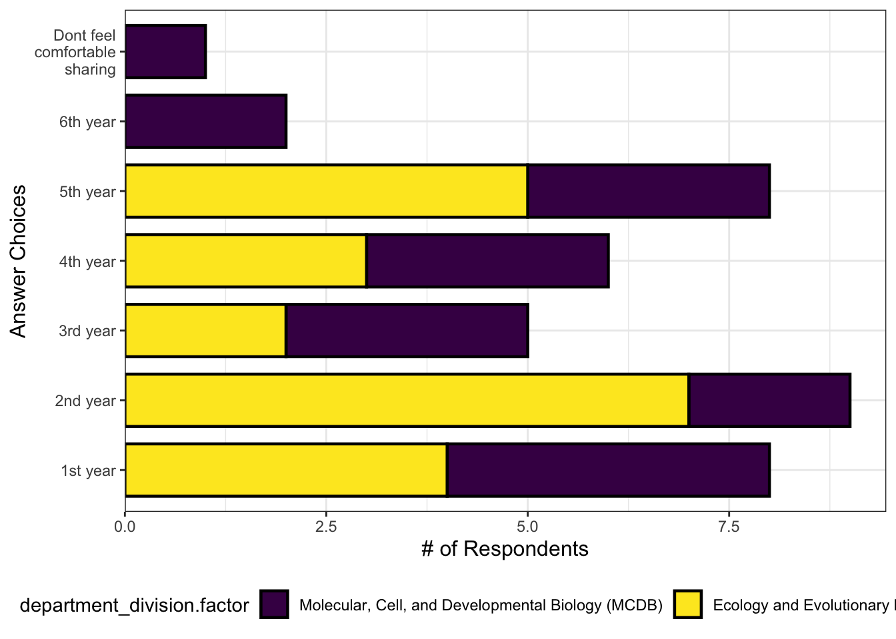
About half (19/39) of respondents hold a masters or transferred from another graduate program while about half (20/39) hold no prior graduate school experience.
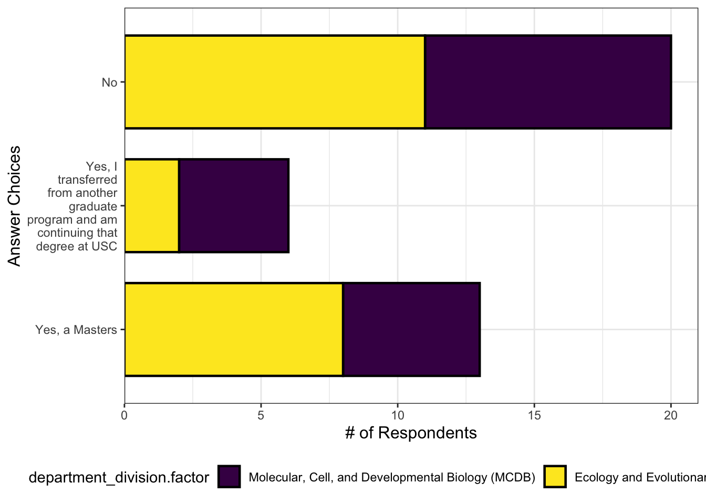
~24% (9/37) of respondents identified as belonging underrepresented group and that split was evenly represented in EEB and MCDB programs.
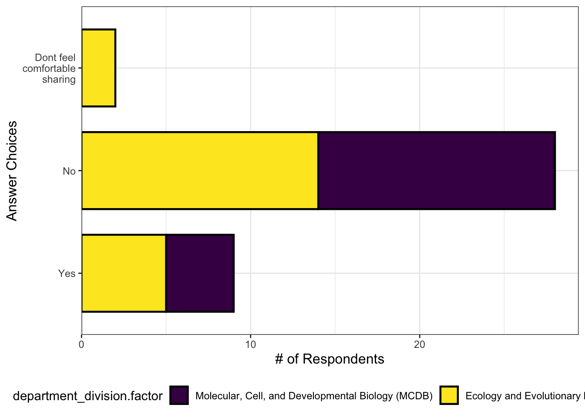
~23% (9/39) of respondents were international students with ~89% (8/9) of those respondents belonging to the MCDB program.
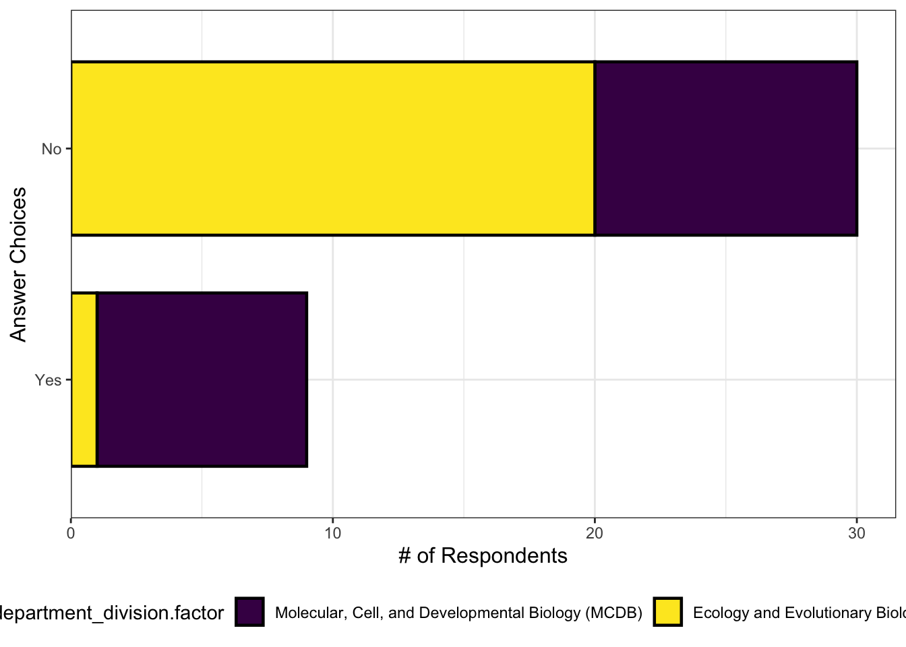
Financial Support & Well-being
Are you currently supported financially by a Teaching Assistantship (TA), Research Assistantship (RA), or other?
61% (24/38) of respondents were on a TA for Spring 2024, with the remainder on RAs.
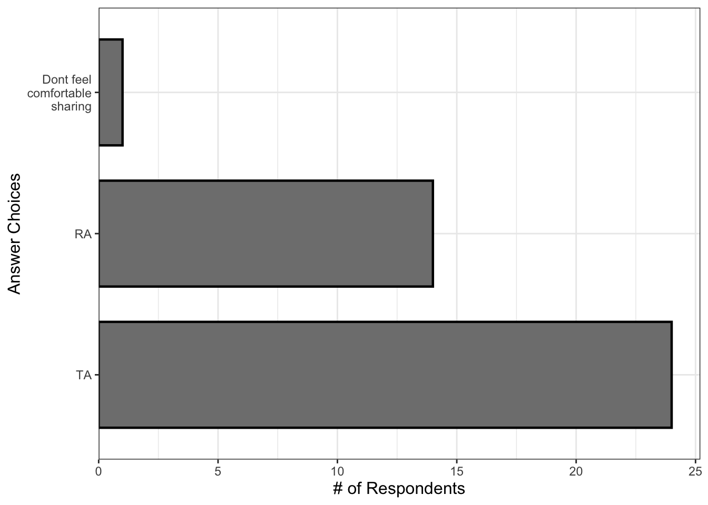
Have you applied to departmental or university grants, fellowships or other funding sources?
A vast majority, 89% (35/39), are not employed outside of their normal graduate student duties.
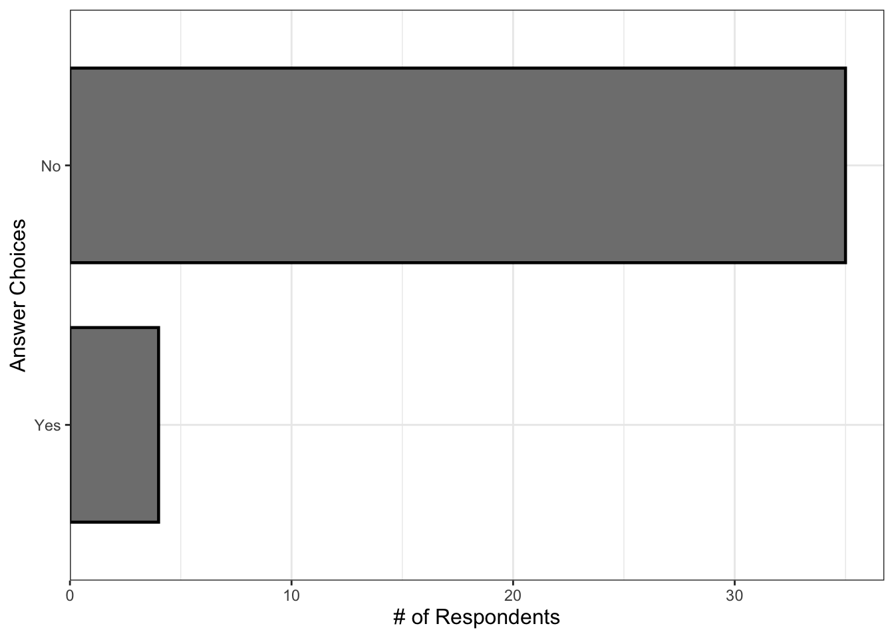
Of the few respondents that stated they are employed outside their normal gradate student duties:
| If you are currently employed outside of your TA or RA, how do you feel it impacts your research, TA or RA employment, work-life balance, or other aspects of your life (e.g., time commitment, opportunity costs, mental or physical bandwidth, etc.)? |
|---|
| Having to seek outside employment makes work-life balance impossible. However, it is not possible to survive on the stipend provided. |
| It has increased my ability to look at details |
| -prolonged my degree -physical toll |
| my employment works nicely with my research efforts. does impact my mental and physical state as I always feel drained or tired |
| I'm not sure yet. This upcoming summer will be the first test to see if it does. Moving forward as I get further along in my research, it will become too much |
Have you applied to departmental or university grants, fellowships or other funding sources?
~74% (29/39) of respondents have applied to Departmental or University funding sources.
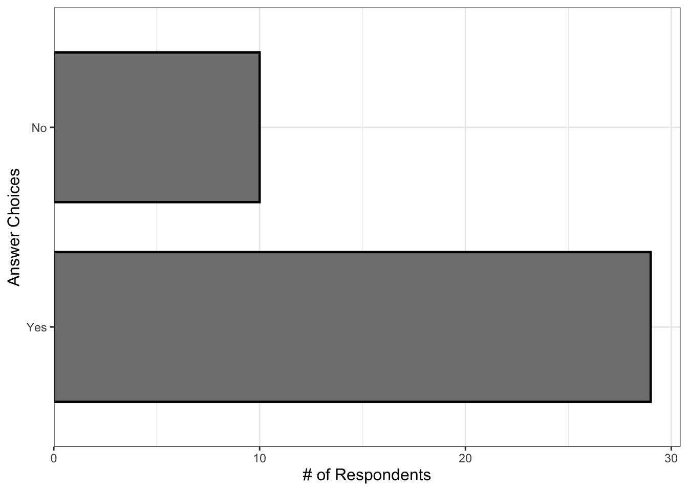
Have you applied to departmental or university grants, fellowships or other funding sources?
~61% (24/39) of respondents have applied for external funding sources.
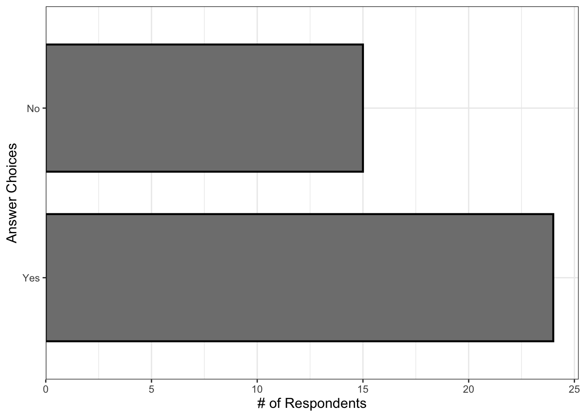
Have you recieved any funding from grants, fellowships, or other funding sources?
~54% (21/38) of respondents have received funding from internal or external fellowships or grants.
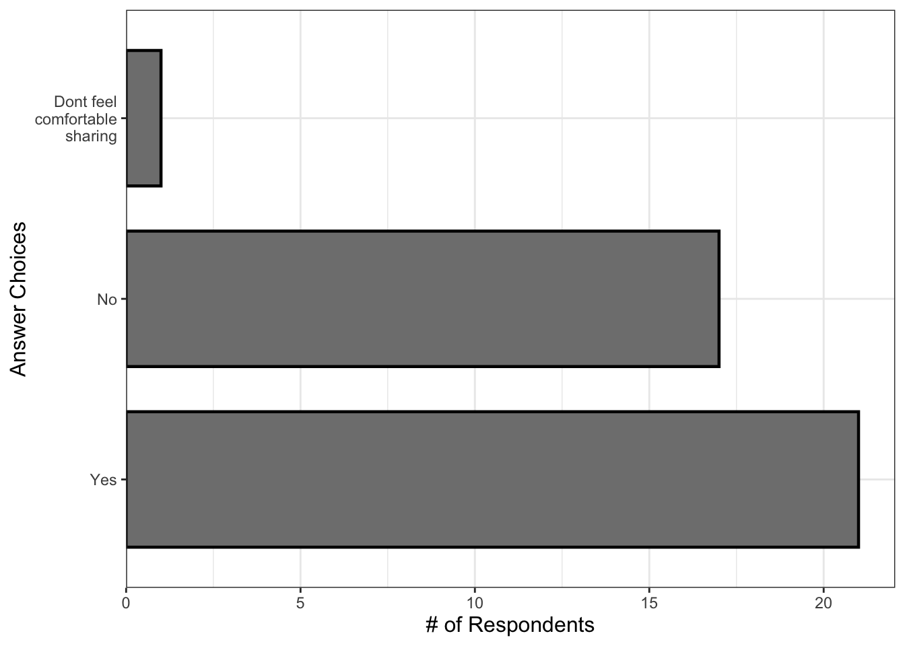
Please indicate your level of agreement with the following statement. I feel there is adequate awareness of potential grants, fellowships, scholarships, or other funding sources available to graduate students in my area of research, graduate career stage, and affiliations (e.g., professional societies or state, national, international opportunities), either from my advisor/lab or through the department.
Although a majority (25/39) of respondents feel there is adequate awareness of funding opportunities, 28% (11/39) do not share this feeling.
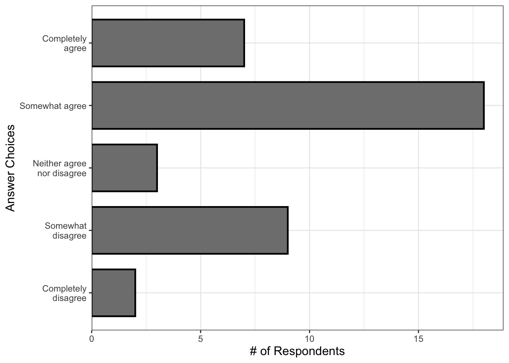
Please indicate your level of agreement with the following statement. I would add to and value a running list of funding opportunities distributed by GABS or the department to help me or other students identify potential funding options.
The vast majority (35/39) agree that GABS should keep a running master list of funding opportunities.
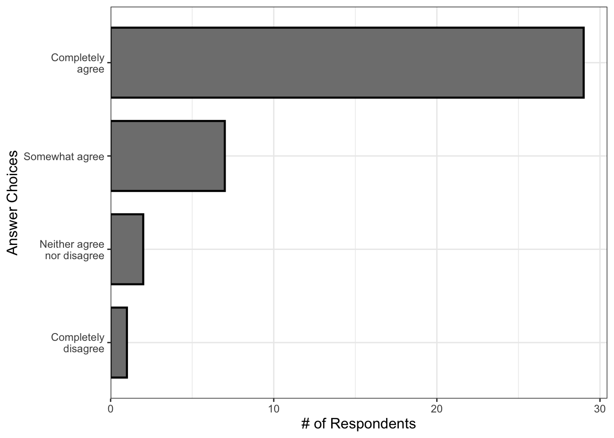
| If GABS were to create a list of funding opportunities for graduate students, are there any particular grants or fellowships you would recommend adding? |
|---|
| NSF GRFP, NSF PRFP |
| SSE Grants; Lewontin Early Award, Rosemary Grant award |
| Fellowships for grant writing, Slocum Lunz Foundation |
| Grants for international students |
| somthing for non-US resident |
| OSNAP https://www.nimh.nih.gov/research/research-conducted-at-nimh/scientific-director/office-of-fellowship-and-training/outstanding-scholars-in-neuroscience-award-program |
| NIH F31 and NSF-GRFP (for first and second year students) |
| ESIP - Earth Science Information Partners Community Fellowship |
| I have an extensive working list (48 grants) that I'd be happy to share. |
| Howard Hughes Gilliam Fellowship |
| F. John Vernberg Bicentennial Fellowship in Marine Science (not just for marine science students, but work must be related to marine science and completed at Baruch Marine Field Lab) |
| Sigma Xi Amnat ASN student research award McFadden Professors program |
| None currently, but willing to help look for additional opportunities |
| Not specifically - I might recommend that for those in which it's relevant looking through the opportunities offered by the Smithsonian or National Institute of Health (NIH) |
| The NIH has a graduate level grant --> Ruth L. Kirschstein Predoctoral Individual National Research Service Award (F31) |
Please indicate your level of agreement with the following statement. In general, I feel supported financially by the department and the university.
A majority (21/39) of respondents feel financially supported by the department and the university.
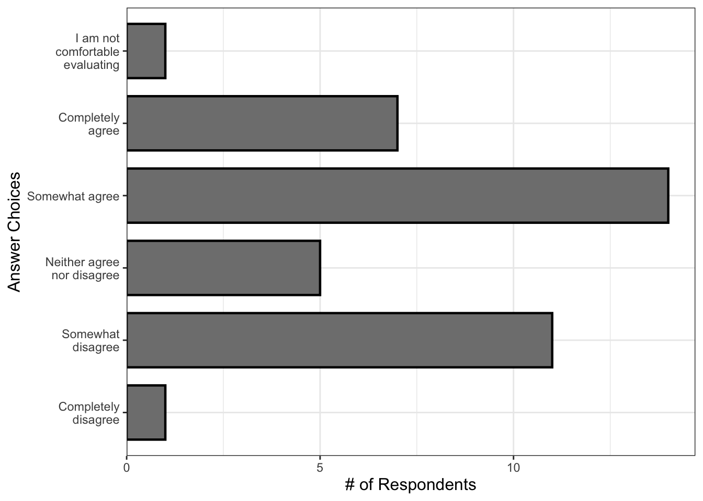
| If you disagree with any of the above statements or have any suggestions on how GABS or the department can improve the financial experience of its graduate students please provide those here. |
|---|
| Provide a stipend that can cover basic living expenses. Pay a stipend that scales with previous teaching/research experience. |
| They can actually pay us in accordance with inflation and rising housing costs instead of waiting to be embarrassed by another report on biology stipends across universities that we were in the bottom 5% of |
| Stipend was increased somewhat recently, but cost of living also took a huge jump. I and other students have experienced some monetary stress. |
| I feel as though most students are not paid enough to have any savings. Thus when emergencies occur we end up either in debt or struggling to survive. |
| While I said I somewhat agree above, there are still areas that could be improved. It was a nice increase in the stipend, that was just a start and it still doesn't match the cost of living in Columbia. Very rarely am I able to actually put any of my paycheck into my savings account, and when I do, it normally doesn't get to stay there very long after utilities the next month. |
| Increase graduate student stipend to account for the average cost of living in Columbia |
| stipend somewhat depends on the PI, however the basic stipend is very low. So it's a matter of being lucky which I feel it's not fair. I think that the minimum stipend should be higher, then up to the PIs if they want to supplement their students |
| 1. Adjust the stipend according to the inflation rate. |
| I feel my lab has decent knowledge of the grant opportunities that exist, but some people in the department aren't aware and would be helpful having a list of opportunities. |
| paying semester fees, increasing stipend |
| A slight pay increase to keep up with higher prices, especially housing. |
| I think we can improve the flow of information about financial matters to graduate students. This should include in-advance explanation of costs that graduate students should expect to pay (types and amounts of fees, etc), a better system to track reimbursement requests and paid reimbursements, consistent and earlier information about how to apply for and receive internal funds, etc. |
| increased stipend |
| It is not for GABS to decide, but with rising cost of living, I do not feel that the current stipend keeps pace with inflation costs. |
| I think that GABS has been doing such a great job with making advancements for the graduate student community in our department. That being said, I think the department needs to address inequities in stipends for students especially those in different labs. I think that those students in well funded labs should have their stipends supplemented by their PIs whereas those in less funded labs should have their stipends supplemented by the department. |
| I think we actually should be paid adequately. Why does Chemistry get paid 30k while we can barely make ends meet at 26k. We do just as much work. And are even expected to be here sometimes 7 days a week. We additionally have multiple jobs other than just doing research. |
| I do feel supported, I do think there is still room for growth and higher stipends, but I recognize that I am fully supported across semesters and have health insurance |
| The fees at the beginning of each semester are confusing. For example, paying a technology fee but I do not use university owned technology while only taking research credits. |
Event Satisfaction
Do you participate in any optional school service opportunities (e.g., university-organized Saturday volunteer activities, or GABS service activities)?
58% (23/39) of respondents rarely or never attend service events. Of the respondents who attend service events 87.5% (14/16) attend department-sponsored or GABS service events.
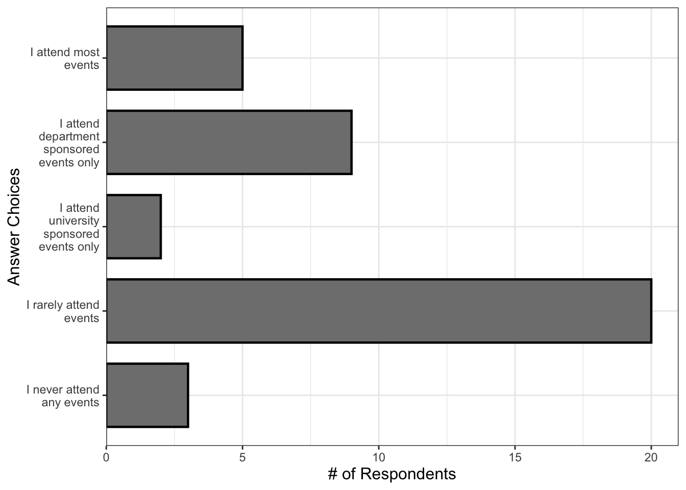
Please indicate your level of agreement with the following statement. I am satisfied with the number and quality of career building workshops offered through the department.
79% (31/39) of respondents were either unsatisfied (17/31) or neutral (14/31) with regards to career building opportunities offered through the department.

| What kinds of career building workshops would you be interested in attending/participating in? |
|---|
| Doesn't matter. No time to attend. |
| does the department offer any such workshops? The university does, and I attend most CTE and library based seminars, but other than invited speaker seminars, does the dept host any such things? |
| How to find a post-doc, how to reach out to collaborators. |
| Job opportunities after graduate school |
| Do we have any to begin with? I would love a more honest insight into what the application for post docs and academic positions looks like as well as what the positions look like once you have accepted the role. Like, what are the things we as students don't typically see that have to be done? |
| Career pathways seminars with PhDs holding positions outside of academia |
| I do not think dept of Biological Sciences has ever had a career-building workshop. I would like to have workshops on how to find and approach both postdoc and industry job positions. Can the department also invite alumni working in various fields (science and/or non-science)? It would be great to have them talk to grad students who, at the end of their degree program, may decide to continue with science or not. |
| Industry career speakers (similar to what Pharmacy does) |
| Anything related to future career options / how to get a post-doc position. |
| Having a seminar or workshop of jobs outside of academia and any advice for applying |
| never heard of any through the department only the ones through university so any through our department would be nice. |
| Rather than full courses, which require substantial investments from both faculty and students, little 3-4 hour or full-day workshops would be nice, perhaps toward the end of a semester (after classes finish). I would have appreciated one on grant-writing, data analysis or other technical skills (e.g., using R, Latex, etc.), manuscript reviewing, or others. |
| Industry positions speakers or fairs |
| I am not aware of any that currently are offered. I would like some sort of certificate in teaching |
| Workshops focused on careers outside of academia |
| Poster design and presentation |
| Training workshops (learning new techniques, etc.), Career Advice/Options Workshops, and Grant opportunity workshops from the Department would all be helpful (and potentially geared toward MCDB or EEB and not a combined seminar). |
| I am interested in attending workshops focused on securing a postdoctoral position after completing my Ph.D. |
| I'm interested in workshops that emphasize mental health while working in the sciences / academia. Things like overcoming impostor syndrome, anti-racism trainings, preventing burnout, etc. |
| I am not sure I have any good ideas of what I would be looking for, this is probably my own shortcoming on looking into what is offered. |
| Interview skills, preparation for post docs/job hunt |
Please indicate your level of agreement with the following statement. I am satisfied with department attendance and participation at invited speaker seminars.
54% (21/39) of respondents are satisfied with departmental seminar attendance and participation.
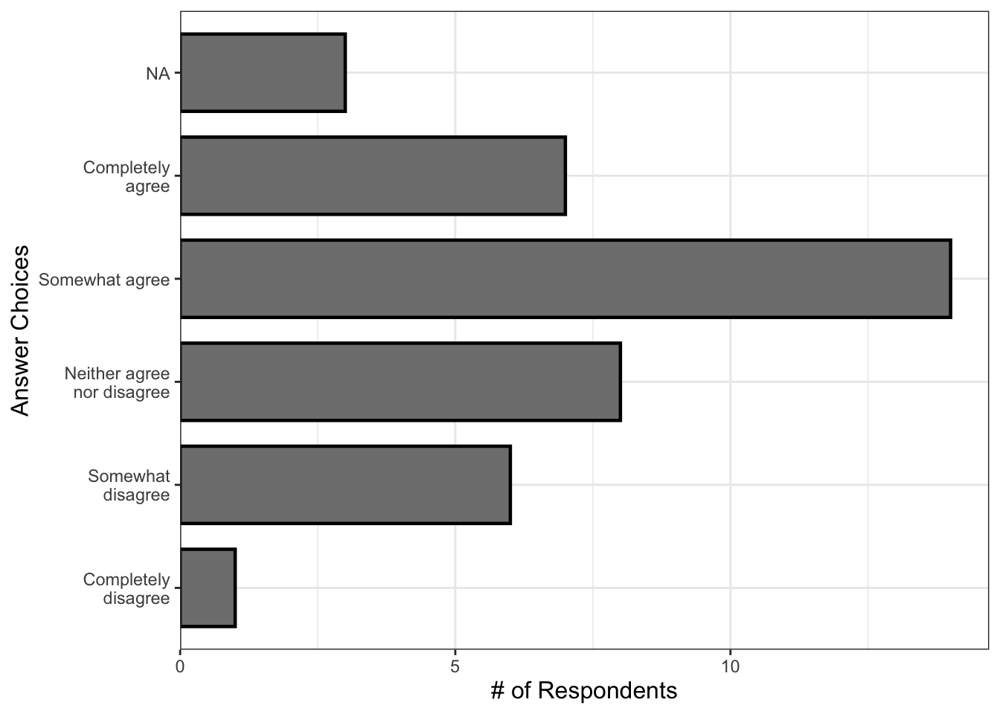
Please indicate your level of agreement with the following statement. I would attend or participate in more invited speaker seminars if changes were made.
46% (18/39) of respondents say they were attend or participate in more seminars if changes were made.
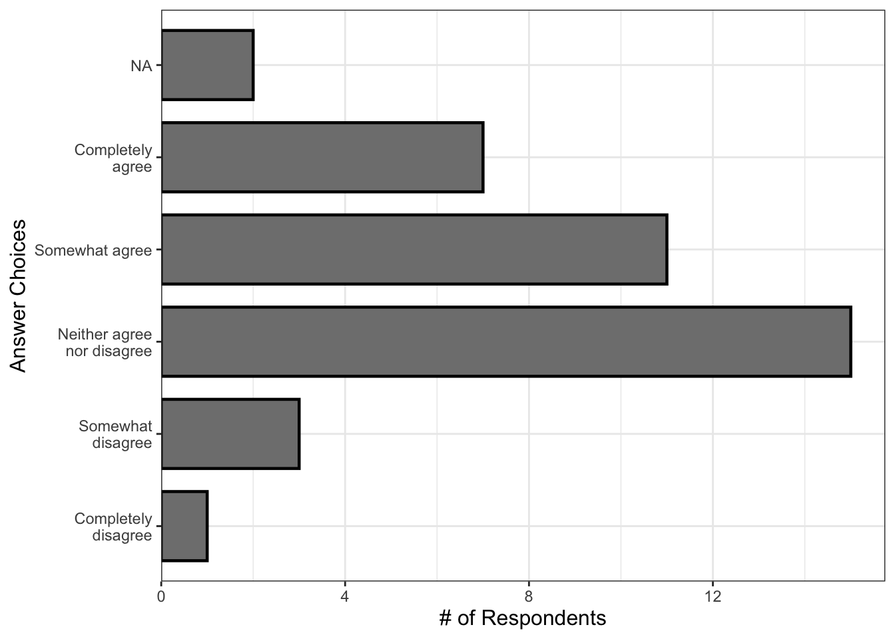
| If you would be more interested in or willing to attend or participate in invited speaker seminars pending particular changes, please indicate what kinds of changes you would like to see (e.g., opening the floor to graduate student questions before faculty have the opportunity; increased advisor attendance or indication that attending would be a productive use of your time; an increased voice in helping choose speakers to invite, etc.). |
|---|
| Nothing really, I attend the ones that interest me and don't the ones that do not. |
| It would be cool to have a grad student Q and A after the seminar instead of before (lunch) so then we could ask more about what their work experience is. |
| I attend majority of the speakers talks as it is, but it would be nice if there was more of a push from the department that PIs need to attend the talks and that they should push their students to attend as well. I feel like many students don't feel like they can go unless it is specific to their area of interest because their PI isn't going... this is what needs to change. |
| Increased voice in helping choose speakers. Lack of MCDB speakers lately |
| I like the current way the seminars are, but recently, there haven't been many seminars focused on MCDB. I would recommend having rotations between different research areas in the department. Also, need better communication on the schedule for the speakers/seminars/grad student lunches. We mostly find out on the day of and it could be one of the reasons for poor attendance. |
| Increasing amount and variety of MCDB speakers |
| More speakers being from MCDB fields, since I feel most are EEB |
| Increased boice in helping choose speakers. Speakers are heavily skewed towards MCDB, yet most graduate students and faculty in attendance are from EEB. |
| Similar to what SEOE does, we should have coffee/tea, and cookies (or some food option) prior to seminar. SEOE staff organizes it for them each week and it's a really nice time to chat with folks in the department. This could be a better way to bridge EEB and MCDB folks. |
| All of the options suggested as examples would be great, particularly opening the floor to grad student questions first, and better communication about who is visiting and when (ahead of time). |
| increased voce in helping choose speakers to invite |
| I felt that the MCDB half of the biological sciences department was greatly underrepresented in the GABS choice for seminar speakers. Of the 5 options, 4 were EEB and one was MCDB. I believe that the neurobiology department is even further underrepresented, as the only neuroscientific talk was almost exclusively about genetics. I also think that many more people would attend if snacks and/or coffee were provided for students. |
| Lunches and Seminars in the same day are difficult. It makes it difficult to actually get anything done in lab. Snacks/Happy hours after may work better for graduate students? Also very few MCDB speakers this year. |
| I would like the invited speakers to be more diverse. Specifically, I think it's important we invite not only scientists from diverse backgrounds but also those who can give a mini workshop on things like land education, anti-racism, mental health and the like. |
| I do like the suggestions you already provided, I think having an option in helping choose would be really cool. |
| It would be great if we had more MCDB related speakers. It seems like all speakers every year for the last 4 years that I have been here are always EEB speakers. Again, they are great people, but as a MCDB focused student I am not interested to hear about someone who studies evolution in butterflies, bugs, or plants. It's repetative. I'd enjoy listening to someone who does regenerative biology, or works on neurodegenerative diseases. |
| the seminars are tailored toward MCDB. I would like to see more EEB representation in the department seminars. |
| At times I feel the speakers field isn't relevant, this isn't reflective of the quality, just that it can be quite far removed from my own work. I don't have a great solution as our department spans a diversity of topics which at times have little overlap. I also appreciate that SEOE and previous departments offer snack + coffee/tea before seminars. I think this brings a nice atmosphere and a little pick me up before a seminar |
| Regarding attendance: Most of the time it is the same people that attend departmental seminar each week, and this is not the majority of the department. |
Perception of University, Departmental, PI, or Teaching Support
Please indicate your level of agreement with the following statement. As an incoming graduate student, I felt prepared and supported to begin my program with the communication, materials, and training I received before or on arrival to USC.
46% (18/39) felt prepared and supported to begin a graduate program in the Department of Biological Sciences.
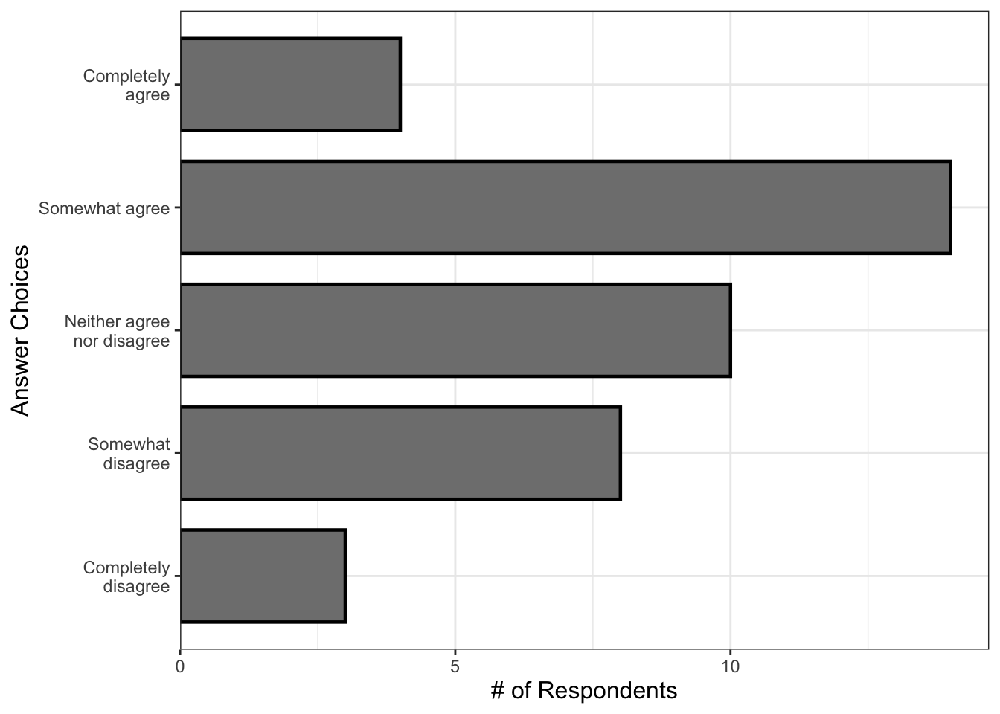
Please indicate your level of agreement with the following statement. In general, I feel supported emotionally by the department.
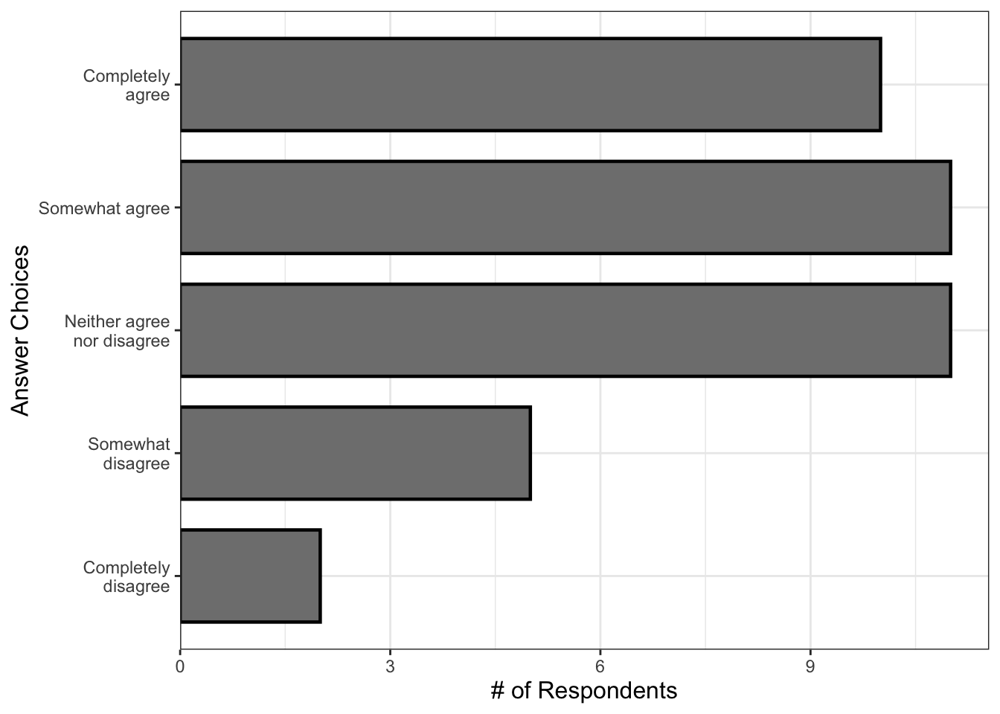
International Respondents were more likely to feel supported by the department than non-international respondents.
Please indicate your level of agreement with the following statement. I think a required core curriculum would improve our graduate education and experience.
51% (20/39) of respondents agreed that a required core curriculum would improve the graduate student experience.
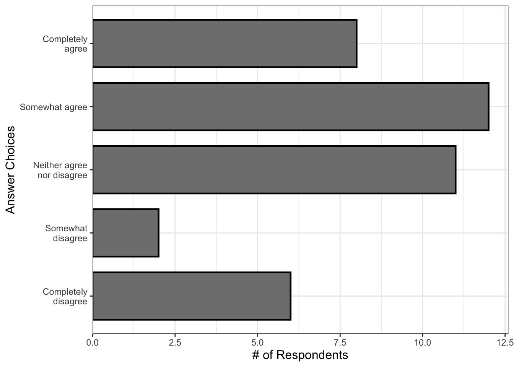
Please indicate your level of agreement with the following statement. I am satisfied with the financial and emotional support provided by my advisor.
74% (29/39) felt supported financially and emotionally by their advisor.
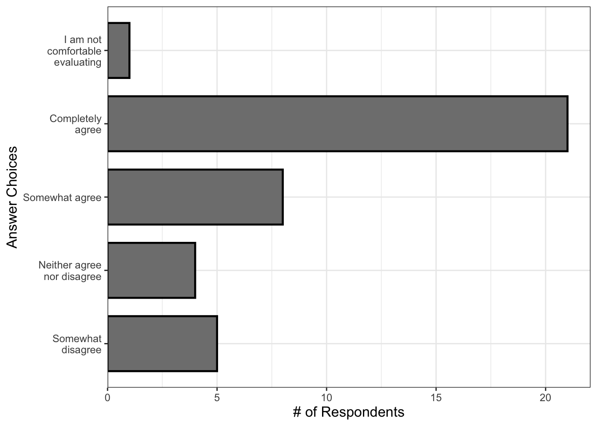
If you are TA, please indicate your level of agreement with the following statement. I am satisfied with the support provided by my lab coordinator.
67%% (21/31) of respondents who were TAs felt supported by their lab coordinator.
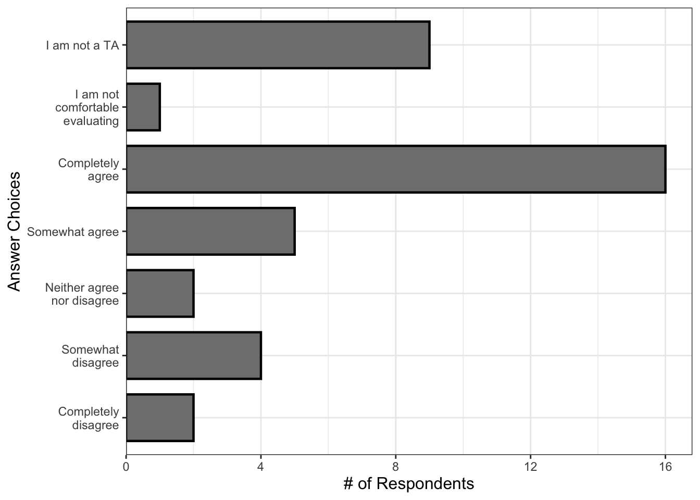
Safe Space
Please indicate your level of agreement with the following statement. I feel safe asking for help (academic, emotional, financial, etc.) in the department.
64% (25/39) of respondents felt safe asking for help.
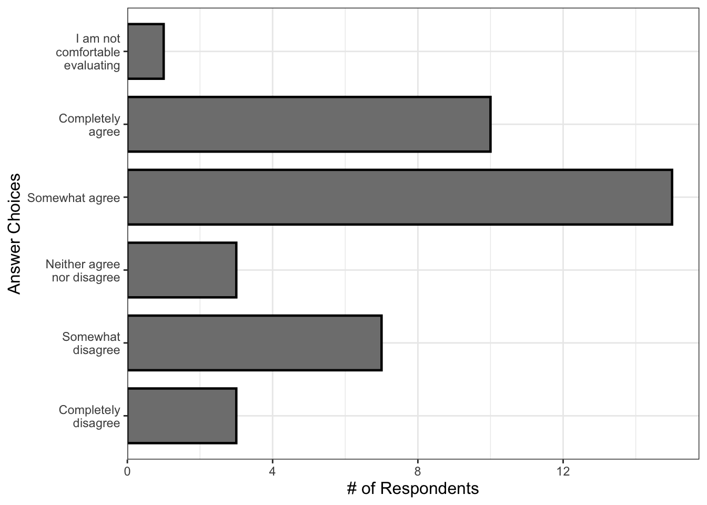
| If you disagreed with any of the above statements related to feeling supported by the department, please elaborate on particular issues or possible solutions, if you wish. |
|---|
| I mean, is a PI supposed to provide emotional support? They provide a small bump to our stipend from grant money which is nice. |
| I was often left to prepare material for all the other TAs despite not being a senior TA. The coordinator would leave things until last minute/ forget details/materials or not communicate clearly what we should be teaching. |
| I think the department can do more when it comes to mental health initiatives for both students and staff. Our department tends to stay away from discussing any aspects of mental health but it is evident that majority of us are under intense stress and while the GABS social events are helpful, the department needs to do something to help. This could be something as simple as sending out little notes of support in our physical mailboxes (because we all get too many emails as it is) or maybe have a department drop-in in 403 like once a month or something with coffee and doughnuts just to get people to talk interact and not think about their work for 10 minutes... things like that. I'm sure there are plenty of other ideas out there, these are just a few that I felt could fit in this box! |
| When i was a TA at the beginning of my PhD there was a lack of training in how to teach material to students and grading to match that of other TAs. I feel like as students starting in the program, more structure would be better. Since the handbook is not strict with deadlines, courses, and available resources, it can be hard to make progress in the program and navigate resources that the department has. Information can be very advisor-based with all students getting differing information |
| financially is ok emotionally I think we should have more support |
| I feel emotionally supported by grad students in the department and, at times, by my advisor too. However, there is no emotional support other than this available in the department if that is the question. Also, I am not a TA anymore, but I used to be one. And when we started here, it was stressful as there was no training or no clear plans for teaching. I say this because the TA meetings I had at the previous school made sure that we all would teach and grade in the same way to avoid any discrepancies across lab sections. This also ensured that the quality of teaching was maintained across sections despite having different TAs. |
| Not having classes overlap with TA positions - there are very few classes offered and yet conflict with some of the TA positions. This could easily be solved by having graduate courses on MW and TA courses on TTH. Some lab coordinators provide more support than others. Having more shared material between students, could save so much time when teaching labs like 101, 102, 301 - new TAs are wasting so much time making materials that could be distributed by lab coordinators. |
| I do not think it useful to institute a required curriculum without offering more course options, such as grant/manuscript writing, data analysis, and broad but graduate level ecology or evolution courses. I would be immensely frustrated if I was required to take courses like bioinformatics or other courses that are specialized to a field or sub-field, or MCDB-focused (as an EEB student). I also do not think that there was sufficient communication prior to arriving on campus (even though I read the entirety of the grad handbook). I had to miss the 'orientation day' for a conference, and none of that material was provided over email or otherwise. Hence, I had to spend a lot of time figuring things out on my own (how to navigate travel and reimbursements, what fees to expect to pay, what physical resources are available to me within the department or on campus, etc.) which could have been easily disseminated in a welcome packet. Lastly, I am very happy with the support provided by the lab coordinator for the course I currently TA, but I have been very dissatisfied in past semesters. The expectation to create new material, even as other TAs have already or are also currently creating such material, is redundant and a waste of time. There are other such inefficiencies and expectations that make TAing an inordinate time commitment and worsen the quality of education to undergraduate students. |
| My research advisor is struggling financially, so there is little to no financial support from REDACTED. Additionally, The lab coordinator for REDACTED has changed to course to make it more demanding but adding 4 possible re-do opportunities for each student (grading everything is not feasible) |
| The employee onboarding process was a little stressful and didn't feel properly communicated. I enjoy having the freedom to choose my own classes with my advisor. |
| It would be nice if someone actually knew what was required in terms of paperwork and similar things for each step, and then communicated that to us as we reached a step. I am never sure of what to do because what happens is often different than what is said in the student handbook we were given |
| I think the preparation is poorly managed, I began my class without any introductions about how to use the BB or resources in classrooms. |
| The lab coordinator for REDACTED has made the grading system extremely convoluted where students never know what their final grade is and where they can fail the class by being absent for a 10 point assignment even if they have perfect scores on the rest of their assignments. |
| I think there could be more standardization in labs - i.e. making rubrics, updating worksheets (there are old and new versions in the sandbox), standardizing powerpoints (and going over main takeaways in TA meetings). I think the idea right now is that this is on the TAs to do and share with each other, but I believe the coordinator should lay the majority of the ground work and TAs can meet up and make small adjustments after that. For emotional support, I think we do have a really positive department and faculty and students are very genuine and nice people. But past the surface level I do not actually see anything happening. At this moment I do not have a suggestion of what could be done, but it seems to me that everyone is fine with saying we have a great group of people (but that does not mean everyone is happy). You can be surrounded by the nicest people and still feel isolated and insecure. Grad school is scary and people are afraid to admit when they feel like they are behind or worry that they know less than everyone else. These are much less discussed and probably really weigh on people (I know I am guilty of these thoughts). I wish I could offer a solution, but it is something I would need to think about more. |
| I selected somewhat disagree for the department supporting me emotionally, I may have been unclear here. I don't think the department needs to support me emotionally directly but I think we could have more resources for mental health (though I may just be lacking knowledge on the subject) |
Please indicate your level of agreement with the following statement. I feel safe being open about my sexuality and/or gender identity in the department.
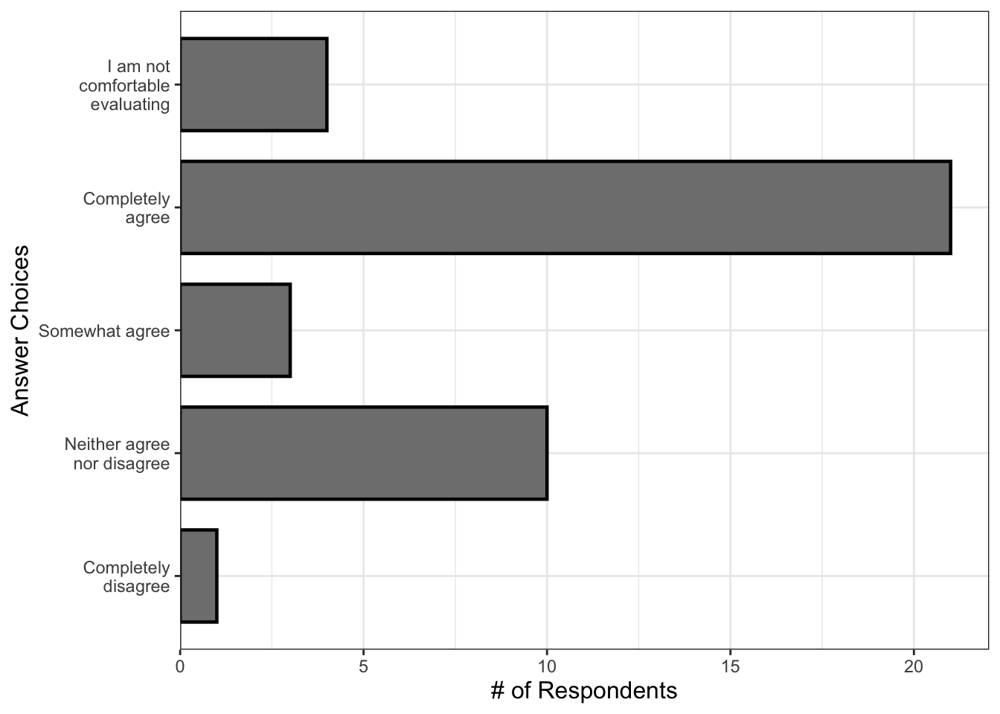
Please indicate your level of agreement with the following statement. I would feel safe calling someone out for inappropriate behavior or ignorant remarks regarding another persons sexuality and/or gender identity in the department.
77% (30/39) respondents agree.
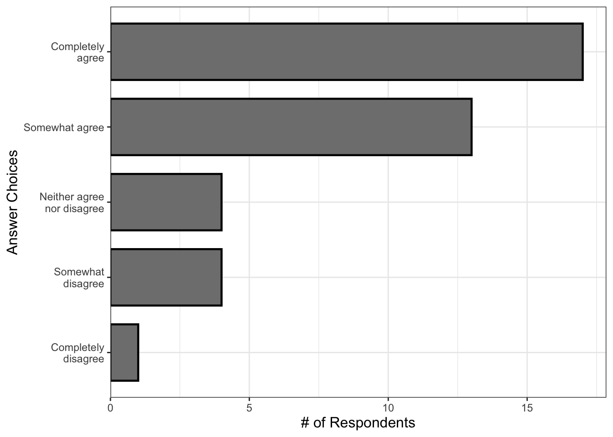
| If you disagreed with any of the above statements related to feeling safe being a member of the department, please provide any helpful details or specifics if you wish. |
|---|
| I would not feel comfortable asking for emotional or financial support from the department. Whenever stipends or reimbursements have been brought up the subject is not always received well by faculty. |
| I do not feel comfortable talking about financial support as I have personally experienced a backlash when stipend or reimbursement issues were brought up. |
| More faculty members from underrepresented groups and explicit support from current faculty could increase feelings of safety. |
| Despite feeling safe here, I think we could provide more visibility and tangible support to underrepresented or marginalized members. This could include training for field safety (navigation, first aid, important info to provide to others accompanying us, such as work expectations and location of restrooms, etc.), even if provided outside the department and just coordinated by the department. I also like the idea of a board near the department office (like the grad student board) with photos/names of faculty and grad students who are out and comfortable identifying themselves/their labs as safe spaces to LGBTQ+ folx or identity-based groups. |
| This goes back to when people do not admit they do not know everything. There have been many times either in class or with my advisor I have said I do not understand something and then suddenly other people chime in that they also do not understand. It is scary to always be the first person to do that. I do not think this is necessarily because of the department but rather a product of schooling that scares people into staying quiet when they are confused. But it is something we also do not address in grad school. |